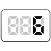
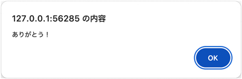

【006】警告ダイアログに表示

- プロンプト例
JavaScriptで警告ダイアログに表示する事例を解説して
警告ダイアログを表示する
- JavaScriptでは、ブラウザ標準の alert() 関数 を使うことで、簡単に警告ダイアログを表示できます。
- 「window.alert( )」 は、任意のメッセージを含むダイアログを表示し、ユーザーがそのダイアログを閉じるまで待機します。
- 一般的には「window.」は、省略されます。
確認ダイアログ（confirm）との違い
警告系のダイアログには3種類あります。
| 種類 | 関数 | 用途 |
|---|---|---|
| 警告 | alert() | メッセージ表示のみ |
| 確認 | confirm() | OK / キャンセル |
| 入力 | prompt() | 文字入力 |
基本構文
alert(`警告メッセージ`);
【実行結果】
→ 画面中央に OKボタン付きのダイアログ が表示されます。
シンプルな例
<!DOCTYPE html> <html> <head> <meta charset="UTF-8"> <title>alertの例</title> </head> <body> <script> alert(`こんにちは！`); </script> </body> </html>
【解説】
👉 ページを開くと 「こんにちは！」というポップアップ が表示されます。
📝 よくある使い方
① 簡単なメッセージ表示
alert(`処理が完了しました`);
② 変数の中身を表示
let name = '太郎'"; alert(name);
let age = 20; alert(`年齢は ${age} 歳です`);
🧪 デバッグ（動作確認）に便利
処理の途中で値を確認するのによく使われます。
let total = 5 + 3; alert(total); // 8 と表示
⚠ 注意点
- OKボタンを押すまで処理が止まる
- 多用するとユーザー体験が悪くなる
👉 実際の開発では、デバッグ用に一時的に使うことが多いです。
注意点（重要）
- alert() は 処理を完全に停止 させる
- 多用すると UX（使い勝手）が悪化
練習問題
- 警告ダイアログボックスに「ありがとう！」と表示する

解答例
alert(`ありがとう！`);